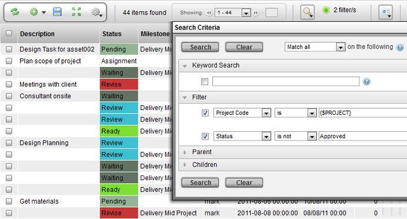
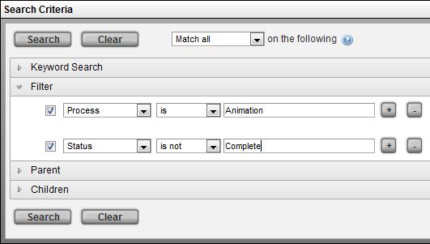
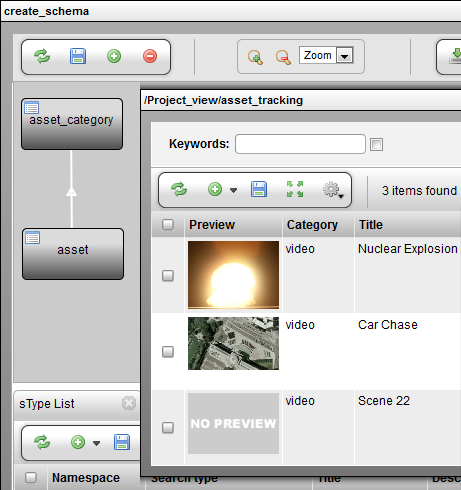
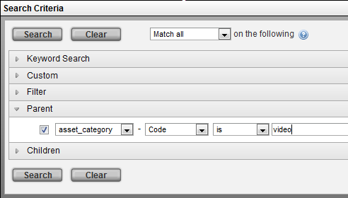
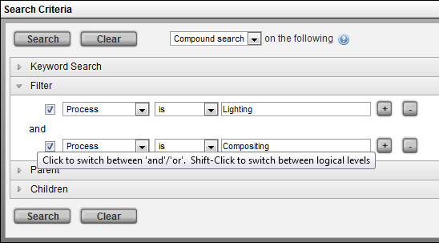
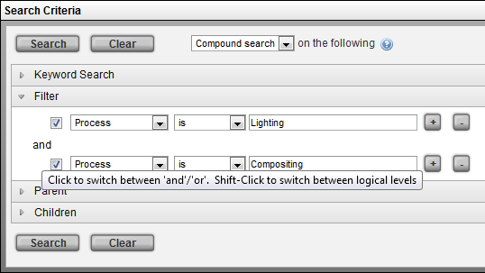
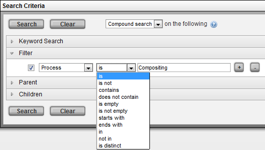
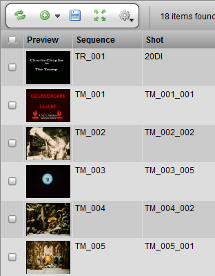
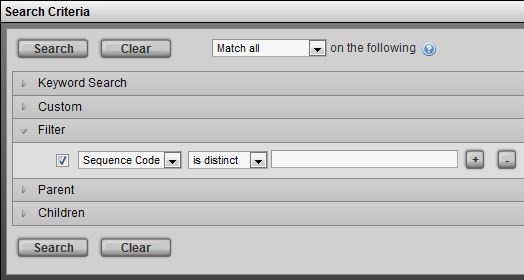

Description
The TACTIC Search Box is used to build filters to refine the results in the view. A variety of search filters can be constructed, ranging from simple column searches to large complex compound searches. The creation of search filters closely resembles that of creating mail filters in a mail application. Each search filter plays a role in the outcome of the final results. The Search Box is flexible enough to handle any kind of search.
Keyword Search
Open the Search Criteria by clicking the  button on the tool shelf.
button on the tool shelf.

The keyword search section allows for creation of a search filter to search on the words found in the column named keywords. These keywords must be manually inputted and updated.
Filter

The Filter section allows for the creation and activation of search filters. Each search filter operates on one attribute on that sType. These searches use standard text search logic and supports TACTIC's expression language.
The Clear button clears out all the data in all the search filters: resets the drop down selection boxes and clears out the input search criteria box.
Parent Search


A search can be based on any property of a parent search type. For example, if asset_category is the parent type then a search can be made based on the properties of the parent. For example, a filter can be created on the parent (asset_category) where the code is "video".
Children Search

The Children search filter allows refining based on data in columns in the children. For example, a filter can be created to find all tasks where the priority is greater than 3.
Matching and Compound Searches
Click the [+] icon beside a search parameter to add additional search definitions.

The drop down selection box at the top of the search box can be used to set up the search to be match open (matching any of the definitions) or match specific (matching all of the definitions). The default match option is "Match all".

Compound Search gives the capability to set an AND or an OR option for filters. The default compound search option is "AND".
To switch the compound search option, select "Compound Search" from the drop down selection box at the top, add a new search filter, click on the word "and" that appears between the search filters to toggle it to "or".

Operators

| is | Finds an exact match. eg. Process "is" Compositing |
| is not | Finds all the results that do not match exactly. eg. Process "is not" Compositing |
| contains | Does a partial match. eg. Process "contains" ompost |
| does not contain | Finds all the results that do not match a partial match. |
| is empty | Match the empty field. |
| starts with | Match on the beginning part of the string. eg. Process "starts with" Comp |
| ends with | Match the ending part of the string. eg. Process "ends with" ing |
| in | Match any of the strings delimited by "|". eg Process "in" Compositing|Lighting |
| not in | Find all the results that do not match the strings delimited by "|". |
| is distinct | Skip duplicates. eg. Sequence "is distinct". |
The "In" Operator
It is possible to search for items in a list using a simple text string with a "|" operator. For example, search for either "TM_001" or "TM_002" or "TM_003":
Sequence code [in] "TM_001|TM_002|TM_003"

The vertical bar (a logical "or") is a delimiter that specifies that the search should look for any item with the code "TM_001" or "TM_002" or "TM_003".
To switch the compound search option, select "Compound Search" from the drop down selection box at the top, add a new search filter, click on the word "and" that appears between the search filters to toggle it to "or".
The "Is Distinct" Operator
This operator filters out items with the same column value. ie. The results will only contain items that have a distinct entry in that column.
Sequence code [is distinct]


note: there is no need to put any criteria in the box when using the operator is distinct
Saving Searches
When saving a view as either "Project View" or "My View", the search filters are also saved with the view. Once the view is saved, the next time the view is opened, the search filters will be applied. This makes saving a view essentially like generating a report with a predefined set of criteria.